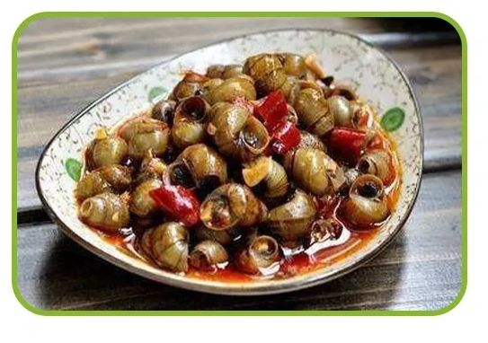
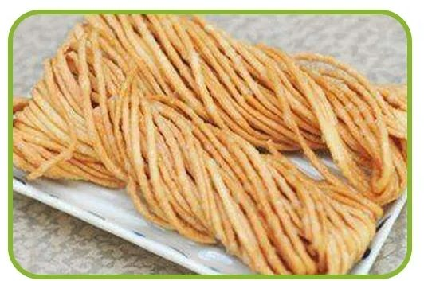

植树
清明前后，春阳照临，春雨飞洒，种植树苗成活率高，成长快。因此，自古以来，我国就有清明植树的习惯。有人还把清明节叫作"植树节"。植树风俗一直流传至今。1979年，人大常委会规定，每年三月十二日为我国植树节。这对动员全国各族人民积极开展绿化祖国活动，有着十分重要的意义。
清明节，兼具自然与人文两大内涵，既是“二十四节气”之一，也是传统祭祖节日。“二十四节气”是上古农耕文明的产物，它与干支时间以及八卦等是联系在一起的，有着久远的历史源头。“二十四节气”不仅在农业生产方面起着指导作用，同时还影响着古人的衣食住行，甚至是文化观念。在早期观象授时时代，依据斗转星移定岁时，斗柄顺时针旋转一圈，谓之一岁（摄提）。天维建元，是从寅开始的，如《淮南子·天文训》收录：“帝张四维，运之以斗，月徙一辰，复返其所，正月指寅，十二月指丑，一岁而匝，终而复始”。在传统文化中，寅位是后天八卦的“艮位”，是岁终岁首交结的方位，代表终而又始，《易·说卦传》：“艮，东北之卦也，万物之所成终而所成始也。”故，北斗星的斗柄从指向正东偏北方位的“建寅”之月为起始，然后顺时针方向旋转，循环往复；岁末十二月指丑方，正月又复还寅位，终而复始。北斗星循环旋转，斗柄回寅，乾元启运，时回新春。当斗柄指向正东偏南的“乙”位时为清明节气。清明这一节气，万物皆洁齐、生气旺盛、吐故纳新、气温升高，大地呈现春和景明之象，正是郊外踏青春游与行清墓祭的好时节。
清明节，是中华民族最隆重盛大的祭祖大节，属于礼敬祖先、慎终追远的一种文化传统节日。清明节凝聚着民族精神，传承了中华文明的祭祀文化，抒发人们尊祖敬宗、继志述事的道德情怀。扫墓，即为“墓祭”，谓之对祖先的“思时之敬”，春秋二祭，古已有之。清明节历史悠久，源自上古时代的祖先信仰与春祭礼俗。据现代人类学、考古学的研究成果，人类最原始的两种信仰，一是天地信仰，二是祖先信仰。据考古发掘，广东英德青塘遗址发现了万年前的墓葬，是中国年代最早的可确认葬式的墓葬，表明上古先民在万年前已具有明确的有意识墓葬行为与礼俗观念。“墓祭”礼俗有着久远的历史源头，清明“墓祭”是传统春季节俗的综合与升华。上古干支历法的制定为节日形成提供了前决条件，祖先信仰与祭祀文化是清明祭祖礼俗形成的重要因素。清明节俗丰富，归纳起来是两大节令传统：一是礼敬祖先，慎终追远；二是踏青郊游、亲近自然。清明节不仅有祭扫、缅怀、追思的主题，也有踏青郊游、愉悦身心的主题，“天人合一”传统理念在清明节中得到了生动体现。经历史发展，清明节在唐宋时期融汇了寒食节与上巳节的习俗，杂糅了多地多种民俗为一体，具有极为丰富的文化内涵。返回顶部
植树清明前后，春阳照临，春雨飞洒，种植树苗成活率高，成长快。因此，自古以来，我国就有清明植树的习惯。有人还把清明节叫作"植树节"。植树风俗一直流传至今。1979年，人大常委会规定，每年三月十二日为我国植树节。这对动员全国各族人民积极开展绿化祖国活动，有着十分重要的意义。 |
扫墓清明扫墓，谓之对祖先的"思时之敬"。清明祭扫仪式本应亲自到茔地去举行，但由于每家经济条件和其它条件不一样，所以祭扫的方式也就有所区别。"烧包袱"是祭奠祖先的主要形式。所谓"包袱"，亦作"包裹"是指孝属从阳世寄往"阴间"的邮包。过去，南纸店有卖所谓"包袱皮"，即用白纸糊一大口袋。有两种形式:一种是用木刻版，把周围印上梵文音译的《往生咒》，中间印一莲座牌位，用来写上收钱亡人的名讳，如:"已故张府君讳云山老大人"字样，既是邮包又是牌位。另一种是素包袱皮，不印任何图案，中间只贴一蓝签，写上亡人名讳即可。亦做主牌用。关于包袱里的冥钱，种类很多。 |
.jpg) 踏青又叫春游。古时叫探春、寻春等。三月清明，春回大地， 自然界到处呈现一派生机勃勃的景象，正是郊游的大好时光。我国民间长期保持着清明踏青的习惯。 |
清明螺
| 清明时节，正是采食螺蛳的最佳时令，因这个时节螺蛳还未繁殖，最为丰满、肥美，故有“清明螺，抵只鹅”之说。 |  |
青团子
| 青团子是用一种名叫“浆麦草”的野生植物捣烂后挤压出汁，接着取用这种汁同晾干后的水磨纯糯米粉拌匀揉和，然后开始制作团子 | .jpg) |
馓子
| 由于南北方的差异，各地方做的馓子用料也就各不一样，北方馓子大方酒脱，以麦面为主料;南方馓子精巧细致，多以米面为主料。 |  |
艾粄
| 艾粄是清明节客家人必备的传统小食，客家人有句老话，叫“清明前后吃艾粄，一年四季不生病”。 |
清明节的活动
扫墓祭祖
扫墓祭祖，是清明节最主要的活动内容。扫墓时间并不局限于清明这一天，各地情况有所差异。扫墓时首先要剪除坟丘上所有的杂草不修理陵墓周围，然后往坟丘 上添一些新土培护，再烧纸钱香烛、供奉酒肉饭菜燃放鞭炮后， 最后向祖先行跪拜礼。
踏青春游 :
“江上冰消岸草青， 三三五五去踏青。' 清明时节同时也是个生机 勃勃的时日， 人们告别蛰伏的户居生活，迎着春天的明媚阳光外出踏 青。
放风筝
在我国古代，放风筝不仅是一项游艺活动而且还是一种巫术行为 ，人们认为放风筝可以放走自己的晦气。很多人在清明节放风筝时，将自己知道的所有病灾都写在风筝上，等风筝放高时，剪断风筝线，让风筝随风飘逝，象征着自己的晦气、疾病都让风筝带走了。这种习俗在我国民间又叫"放断鹞'。
植树
自古以来，中国就有清明节植树的习惯。植树的民俗源于丧葬习俗，早在西周时期，封建统治者便开始在坟头栽种树木，不过那时的植树只是统治者显示地位的一-种标志。到了春秋时期，民间才开始仿照统治者的行为在坟头植树。当然，清明前后，春阳照临，春雨飞酒种树成活率高，也是重要原因。
荡秋干
古代清明节也称“秋千节”民俗相传，荡秋千可以驱除百病，而且荡得越高，象征生活过得越美好。荡秋干，最初主要是一种女子的游戏，起源很早，南北朝时期就已流行，唐代以来更是盛行于大江南北。后来荡秋千不限于女子成为男女皆宜的游戏。
戴柳插柳
插柳是清明节的重要习俗。柳个号树得春气之先，)每年冬春转换之际，当四野还是一片萧条时总是它最先突出新绿。每到清明，不论达江) 入南北，家家户户都要折柳枝插在自个家的门楣上，大户人家还要将燕子状的节日食品串在柳条上。前往郊外扫墓的时候，人人都会在自己的衣物上插上柳枝。
踢蹴鞠
清明节除了祭祖扫墓之外，还有各项户外活动，"蹴鞠” 就是其中一项十分有趣的活动。蹴鞠，就0是现在足球的前身，球皮是用皮革做成，球内用毛塞紧。相传蹴鞠早于商代已有，战国时期流入民间，至汉代更成了军中用以练身习武，并列于兵书。